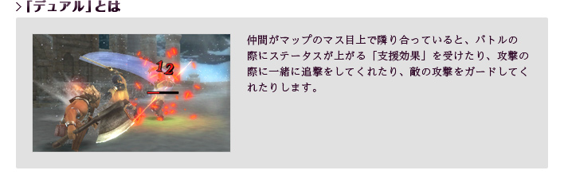
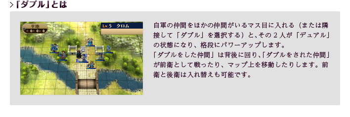
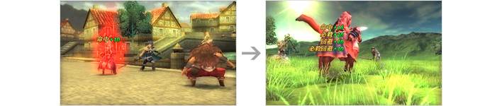
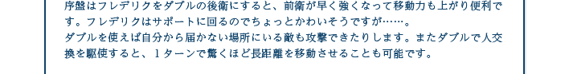
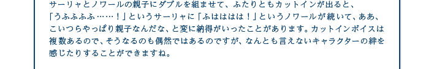

『ファイアーエムブレム 覚醒』のバトルには、「デュアル」と「ダブル」という新しい要素が追加されています。


とくに「ダブル」は、移動速度が遅い仲間を速い仲間で移動させたり、HPが残り少なくなった仲間を一時的に避難させたりもできます。戦略の選択肢を広げてくれるシステムです。かなり強いと感じるような相手でも、「デュアル」や「ダブル」を駆使すれば、意外なほどアッサリと倒せてしまうはずです。
さらに、バトルで協力し合った仲間同士は、次第に仲がよくなっていきます。この仲のよさがある程度に達すると、「支援会話」を行って「支援レベル」を上げることができます。「支援レベル」が上がるほど、「デュアル」や「ダブル」にしたときのパワーアップ効果も上がります。

したがって本作では、これまでのようにバトルに勝ったり、特定の仲間を育成したりするだけでなく、どの仲間同士の絆を早く育てるか、という要素も重要になってくるのです。
ちなみに筆者は、移動速度の速い仲間と遅い仲間をワンセットにして、できるだけ毎回同じ組み合わせで「ダブル」にしていました。こうすると、前衛の「ソシアルナイト」や「ペガサスナイト」が早く成長し、「支援レベル」もどんどん上がるので、効率が良くなります。バトル開始時の「マップ・配置」で、ワンセットにする仲間同士を近くに配置しておくと、この方法がやりやすくなるはずです。
ちなみに筆者は、移動速度の速い仲間と遅い仲間をワンセットにして、できるだけ毎回同じ組み合わせで「ダブル」にしていました。こうすると、前衛の「ソシアルナイト」や「ペガサスナイト」が早く成長し、「支援レベル」もどんどん上がるので、効率が良くなります。バトル開始時の「マップ・配置」で、ワンセットにする仲間同士を近くに配置しておくと、この方法がやりやすくなるはずです。




![とにかく支援会話の量がものすごく多いので、ネタがかぶったり、他のカップルと似たような展開になっていないか注意しました。自分でもいくつか支援会話Sのテキストを書きましたが、最初は「好きです」や「愛している」などと書く度にいちいち照れていました。そのうちに平常心で甘い会話を書けるようになったのですが、なんだか初々しさを失ったような気がします。クロムとフレデリクの支援会話は、多くの人が最初に見るマイユニットが絡まない支援会話なので、「今回のキャラクターの掛け合いは面白い」と思っていただけるようコメディ色が強めになっています。また、クロムと女性マイユニットの結婚に至る過程も、かなりすごい展開ですよ。マリアベルとオリヴィエ、オリヴィエとアズールの会話は、実は一部繋がっているところがあります。アズールの女好きな性格は、オリヴィエがマリアベルとの間で覚えた「ある事」が原因で……この先はぜひ本編で確認してみてください。相性占いは本編に絡まないオマケ要素ということで、「髪型変えればいいのに」とか「一緒に買い物行きたい」など、本編中では使えないようなテキストをたくさん入れています。キャラクターたちをより身近に感じていただければ嬉しいです。](img/comment08.gif "とにかく支援会話の量がものすごく多いので、ネタがかぶったり、他のカップルと似たような展開になっていないか注意しました。自分でもいくつか支援会話Sのテキストを書きましたが、最初は「好きです」や「愛している」などと書く度にいちいち照れていました。そのうちに平常心で甘い会話を書けるようになったのですが、なんだか初々しさを失ったような気がします。クロムとフレデリクの支援会話は、多くの人が最初に見るマイユニットが絡まない支援会話なので、「今回のキャラクターの掛け合いは面白い」と思っていただけるようコメディ色が強めになっています。また、クロムと女性マイユニットの結婚に至る過程も、かなりすごい展開ですよ。マリアベルとオリヴィエ、オリヴィエとアズールの会話は、実は一部繋がっているところがあります。アズールの女好きな性格は、オリヴィエがマリアベルとの間で覚えた「ある事」が原因で……この先はぜひ本編で確認してみてください。相性占いは本編に絡まないオマケ要素ということで、「髪型変えればいいのに」とか「一緒に買い物行きたい」など、本編中では使えないようなテキストをたくさん入れています。キャラクターたちをより身近に感じていただければ嬉しいです。")